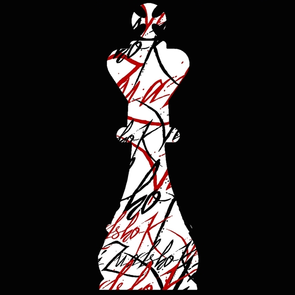
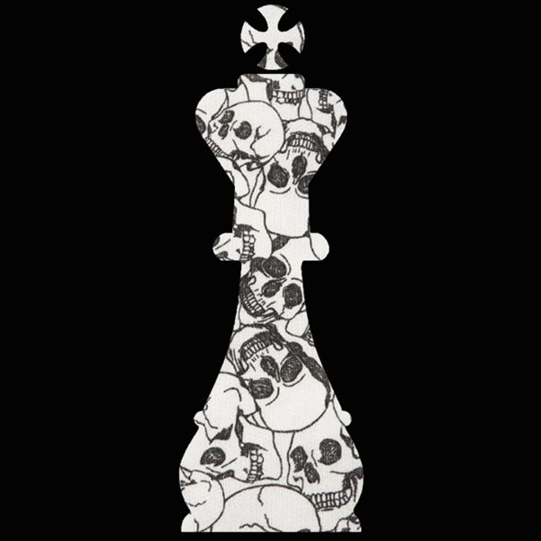

O Império foi um grupo criado no ano de 2014 (E vive até os dias de hoje). A idéia de criar o grupo surgiu na sala que era fixa do kira, a "Novo mundo" ... Vinda não só de uma pessoa mas de aparentemente 3: Lars, kira e jenni ... Porém a primeira tentativa de criação falhou majestojamente (Palavras da própia Lars), então imediatamente quando todos sairam do grupo Lars apagou o grupo e refez com nome de "Império".
Adicionando de volta as mesmas pessoas, porém dessa vez deu certo ... Não se sabe ao certo por que essa recriação deu certo ... De acordo com Lars
"Os símbolos que representam o império por aí são peças de xadrez no geral, tabuleiros, o jogo, a ideia de conquista imperial, de união de "nações", de pessoas diferentes que permanecem diferentes, mas juntos. É uma romantização de uma ideia cruel de dominação, mas já rendeu boas gargalhadas e fanfics, quando pensadas de forma fictícia. O maior símbolo do Império foi, por um bom tempo, a Rainha do xadrez, a peça mais poderosa e uma referência a presença feminina muito forte no grupo. Hoje estamos dando mais evidência ao peão, pra gente simboliza o conjunto."
O império foi tomando vida sozinho acreditamos, mesmo sem intervenção de fundadores e admins o grupo continou rolando e crescendo ... e com isso claro problemas, confusoes, desentedimentos, e ate mesmo (acredite se quiser) espiões surgiram em meio a trama do grupo ...
Com uma grande rotatividade de membros no começo, os poucos membros que conseguiram criar laços permacem até hoje como bons camaradas no grupo ... sendo um número bem pequeno de pessoas que conseguiram essa façanha. Muitos lá fizeram amigos que vão levao pro resto da vida na memória. Aconteceu por forças externas de membros sairem e não conseguirem voltar ... mas vezes conversam com um dos membros e relembram bons momentos lá dentro.
Sendo um dos grupos mais criticados pelas demais pessoas envoltas no chat ou se preferir "comunidade dollars BR" ... Muitos no começo falaram que grupo não duraria muito, que entraria em decadencia rápido. Pragas foram rogadas, pessoas e mais pessoas hateando o Império. Eis um grupo que até nos dias de hoje muitos não gostam de ouvir o nome ou ler ele por aí ...
Seguem Palavras da Própria Lars, que está com o grupo até hoje e ajudou-nos a contara história do grupo:
"Também já recebi muitas críticas e tentei incentivar a manter as características positivas e corrigir os erros que eu podia/notava, ainda não é um grupo de amigos perfeito e isso bem deve existir, mas quem tá lá gosta muito de lá e um do outro porque estamos a 6 anos nessa e nada impede ninguém de seguir seu caminho, nos ajudamos bastante e nos incentivamos, também brigamos pra
Seguem algumas imagens que foram capa do grupo império:
 Para os membros que seguem até hoje no grupo, eles são praticamente uma familia ... Mas vamos a algumas ocorrencias que se passaram na história do grupo para descontrair.
-Near:
-Nihakai:
-Vash:
-Vini:
-espionagem:
Pessoas famosinhas no chat que foram/são do grupo: jenni, Lars, Joaozinho, Duskam, Aoi, Oyaho